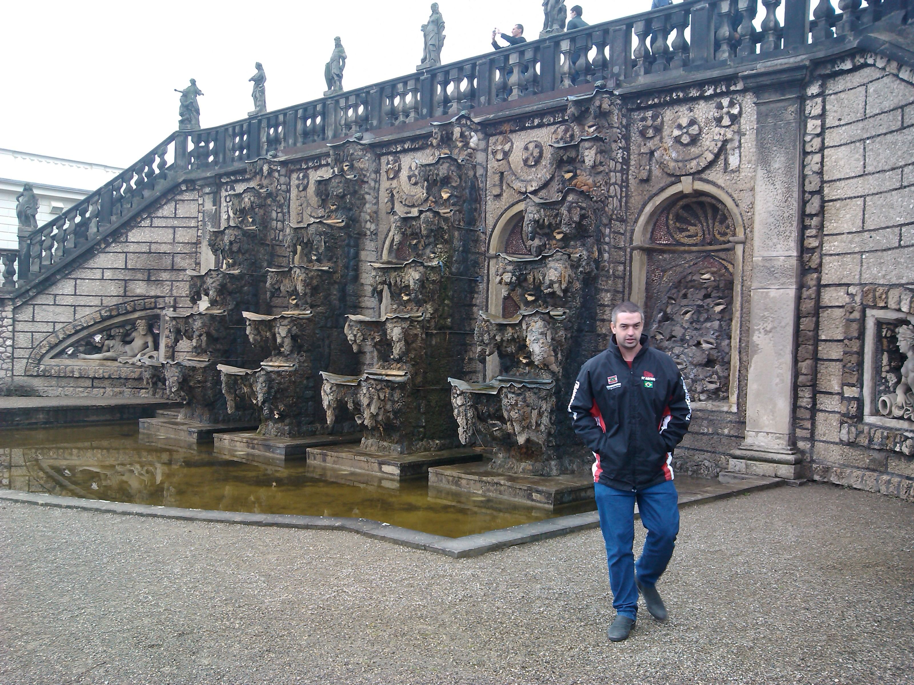

Alberto Zilio

Engenheiro Eletricista
Engenheiro de Segurança do Trabalho
Acadêmico do Curso de Engenharia de Software
Formações Acadêmica
- Graduação em Engenharia Elétrica pela Universidade Estadual de Santa Catarina (Udesc) - 1997-2002
- Graduação em Engenharia de Segurança do Trabalho pela Universidade Católica de Santa Catarina (Puc-SC) -2018-2022
- Graduando em Engenharia de Software pela Universidade Católica de Santa Catarina (Puc-SC) -2022 - Atual
Experiência Profissional
Sociesc - Sociedade Educacional de Santa Catarina - 2003-2006
Unisociesc
Professor de Cursos Técnicos
- Disciplinas:
- Eletrônica
- Telecomunicações
- Automação Industrial
Professor de Cursos Superiores
- Disciplinas:
- Eletrônica Digital
- Acionamentos Elétricos
- Eletrotécnica
ZFW Engenharia em Controle e Sistemas Ltda 2005-Atual
Zfw Engenharia em Controle e Sistemas Ltda
Engenheiro Eletricista
- Atividades Desenvolvidas:
- Projetos
- Paineis Eétricos
- Sistemas de Automação
- Sistemas Robotizados
- Programação de Controladores Lógicos
- Programação de Computadores Industriais
- Programação de Intefaces Homem Máquina
- Programação de Sistemas Supervisórios
- Implementações de Sistemas Industria 4.0